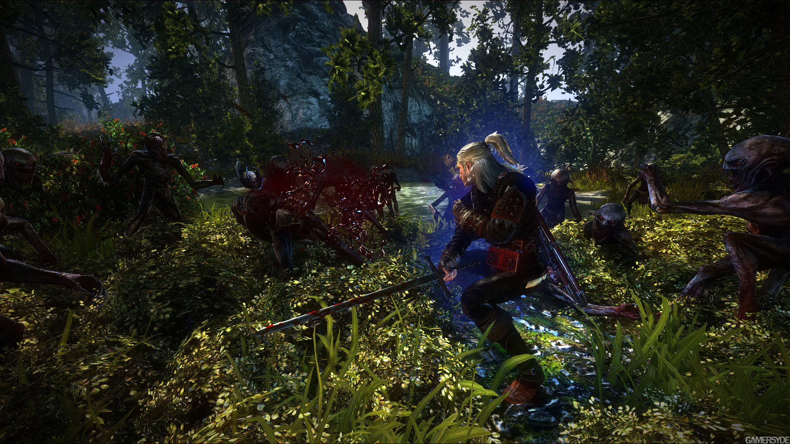

O jogador é Geralt de Rivia, um matador de monstros profissional, um bruxo. Enredado na turbulência política que envolveu Temeria, Geralt ajudou a reprimir a rebelião da Ordem da Rosa Flamejante. Logo depois, ele salvou a vida do Rei Foltest quando o monarca foi atacado por um assassino parecido com um bruxo. Ele continua a proteger o rei, servindo como seu guarda-costas enquanto Foltest se esforça para trazer paz ao seu reino. Os últimos bastiões da Ordem cederam ao exército real, mas ainda resta uma tarefa - a Baronesa La Valette anunciou sua secessão do reino, e sua fortaleza deve ser tomada. Um mês após a tentativa de assassinato, os exércitos de Foltest estão nos portões do Castelo de La Valette, preparando-se para um ataque final. Ainda ao lado de Foltest, Geralt está entre eles, incapaz de começar sua busca pessoal para descobrir a origem e a identidade do misterioso assassino
Graças ao novo e ultramoderno REDengine, The Witcher 2: Assassins of Kings Enhanced Edition apresenta tanto belos gráficos quanto mecânicas sofisticadas no jogo, atraindo os jogadores para o mundo mais animado e crível já criado em um videogame. Uma experiência visual completamente envolvente, The Witcher 2 no Xbox 360 é sem dúvida o RPG mais bonito já lançado para consoles.
COMBATE TÁTICO, BRUTAL E ESPETACULAR. Um sistema de combate que funde batalhas espetaculares e dinâmicas com mecânicas de RPG bem desenvolvidas e uma gama completa de opções táticas.
| Componentes | Requisitos Mínimos |
|---|---|
| Processador | ntel 2.2 GHz Dual-Core ou AMD 2.5 GHz Dual-Core. |
| Memória RAM | 1.5 GB (Win XP), 2GB (Win Vista/Win 7) |
| Placa de Vídeo | GeForce 8800 (512 MB) or Radeon HD3850 (512 MB). Resolution: 1280x720. |
| Espaço em Disco | 25GB |
| Sistema Operacional | Windows XP/Vista/7 |
| Componentes | Requisitos Recomendados |
| Processador | Intel or AMD Quad-Core |
| Memória RAM | 3 GB (Win XP), 4GB (Win Vista/Win 7) |
| Placa de Vídeo | GeForce 260 (1 GB) or Radeon HD 4850 (1 GB). Resolution: 1440x900. |
| Espaço em Disco | 25GB |
| Sistema Operacional | Windows XP/Vista/7 |